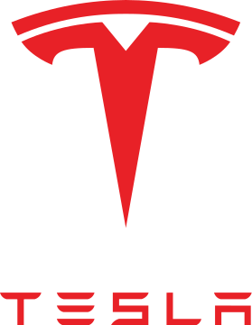

 Tesla (читается Тэ́сла, ранее Tesla Motors) — американская компания, производитель электромобилей и (через свой филиал SolarCity) решений для хранения электрической энергии[6][7][8][9]. Компания была основана в июле 2003 года Мартином Эберхардом[en] и Марком Тарпеннингом, но сама компания считает Илона Маска, Джеффри Брайана Штробеля и Иэна Райта почти её сооснователями[10][11]. Названа в честь всемирно известного электротехника и физика Николы Теслы.
В отличие от большинства автопроизводителей, Tesla не продаёт автомобили через независимых дилеров. Как правило, салоны Tesla представляют собой лишь демонстрационные площадки, покупка осуществляется непосредственно через сайт Tesla. Это отчасти схоже с моделью продаж Apple. В большинстве штатов США прямые продажи автомобилей от производителей и продажи через принадлежащих им дилеров ограничены или запрещены. Tesla пришлось столкнуться с судебными исками о запрещении прямых продаж. В некоторых штатах (Виргиния, Техас) компания проиграла дела, и продажи Tesla были запрещены[58].
| Модельный ряд | Производство |